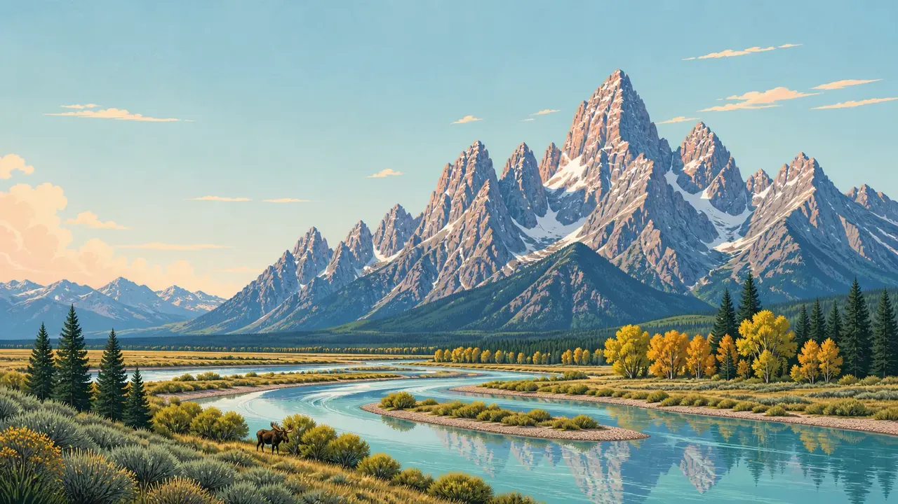

Common Questions
Questions, answered
Everything about TrailMark, the parks, and planning a visit, in one place.
About TrailMark
What is TrailMark?
An illustrated archive of all 63 U.S. national parks. Each park has its own painting, badge, and chapter covering the landscape, wildlife, geology, seasons, photography, and how to visit responsibly.
Copy linkIs TrailMark part of the National Park Service?
Who makes TrailMark?
It’s designed and built by Yegor Hambaryan, a web designer and developer in New York. (More on the About page.)
Copy linkAre the pictures photographs?
The park paintings and badges are illustrations created for TrailMark. Visitor photos (on the Photos page and park pages) are real photographs shared with permission and credited.
Copy linkWhere does the information come from?
Each chapter is researched from National Park Service pages, and the sources are recorded for every park. Numbers that can’t be confirmed are left out.
Copy linkIs it free?
Yes. No ads, no account.
Copy linkHow often is it updated?
Park chapters are revised when better information comes in. The Today page refreshes from official NPS data every day.
Copy linkUsing the site
How do I find a park?
What does the Today page show?
For each park: current NPS alerts and closures, today’s hours, visitor-center hours, and entrance-fee information, refreshed daily from NPS data, with an “as of” time. Conditions change quickly, so always confirm with NPS before you go. (See the Today page.)
Copy linkWhat are the badges?
Every park has its own circular mark. They’re part of the collection on the homepage and About page.
Copy linkDoes it work on my phone?
Yes. TrailMark is built mobile-first and loads light.
Copy linkIs TrailMark accessible?
It aims for WCAG 2.2 AA: pages work from the keyboard, including the menu, the park filters, and the chapter links on a park page; text stays at a contrast of at least 4.5:1, including type over paintings; images carry alt text; and reduced motion turns off the crossfade, parallax, badge tilt, and scroll reveals while leaving the content visible. Report problems via Contact.
Copy linkPlanning a visit
How many national parks are there?
63 sites carry the “National Park” title. The National Park Service manages more than 400 sites in total, including monuments, historic sites, and seashores.
Copy linkDo I need a reservation to enter?
Some parks require timed-entry or vehicle reservations during busy seasons, and the rules change year to year. Check the park’s NPS page and Recreation.gov before you go.
Copy linkHow much does it cost?
Many parks charge an entrance fee and some are free. Annual passes like America the Beautiful cover entrance at all national parks. Fees change, so check nps.gov (the Today page shows the current fee NPS lists).
Copy linkAre there free entrance days?
Yes, the NPS sets several fee-free days each year. Check the NPS fee-free days page for this year’s dates.
Copy linkWhen is the best time to visit?
It depends on the park. Each chapter has a Seasons section describing what each part of the year is like there (for example, Yosemite’s seasons).
Copy linkCan I bring my dog?
Rules vary by park. Pets are usually allowed in developed areas and on some trails, but not in most backcountry. Check the park’s pets page on NPS.
Copy linkCan I fly a drone?
Launching or landing drones is prohibited in national parks without special authorization.
Copy linkHow close can I get to wildlife?
Keep your distance. NPS guidance commonly asks for at least 100 yards from bears and wolves and 25 yards from other large animals, and some parks set their own rules. Never feed wildlife.
Copy linkWill I have cell service?
Often not. Download maps and park info before you go, and tell someone your plans.
Copy linkWhat should I do in an emergency?
Call 911. For park-specific emergencies and rangers, use the contact information on the park’s NPS page.
Copy linkPhotos & stories
Do I keep the rights to my photo?
Yes. Sharing gives TrailMark permission to publish it with credit, and location data is removed before posting.
Copy linkCorrections & contact
I found a mistake.
Thank you. Use the Contact page, choose “Correction”, and include the park and what’s wrong (and a source if you have one).
Copy linkHow do I get in touch?
The Contact page.
Copy link